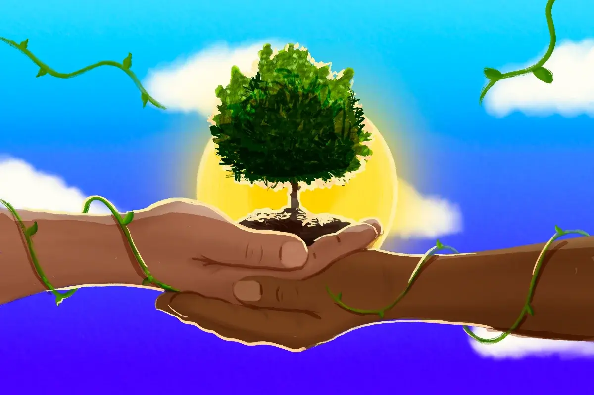
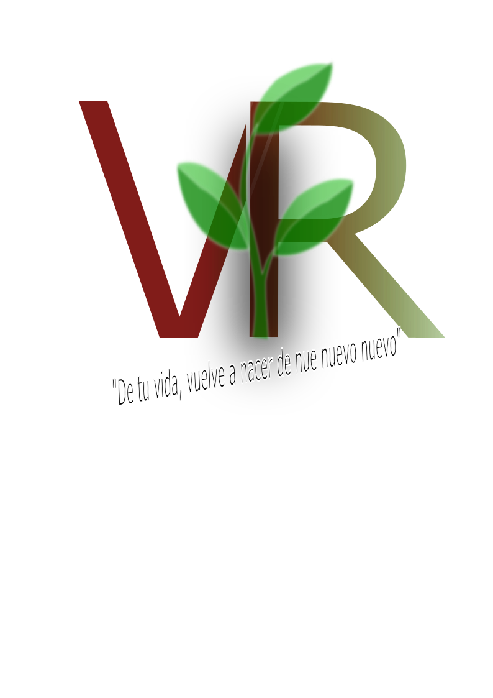
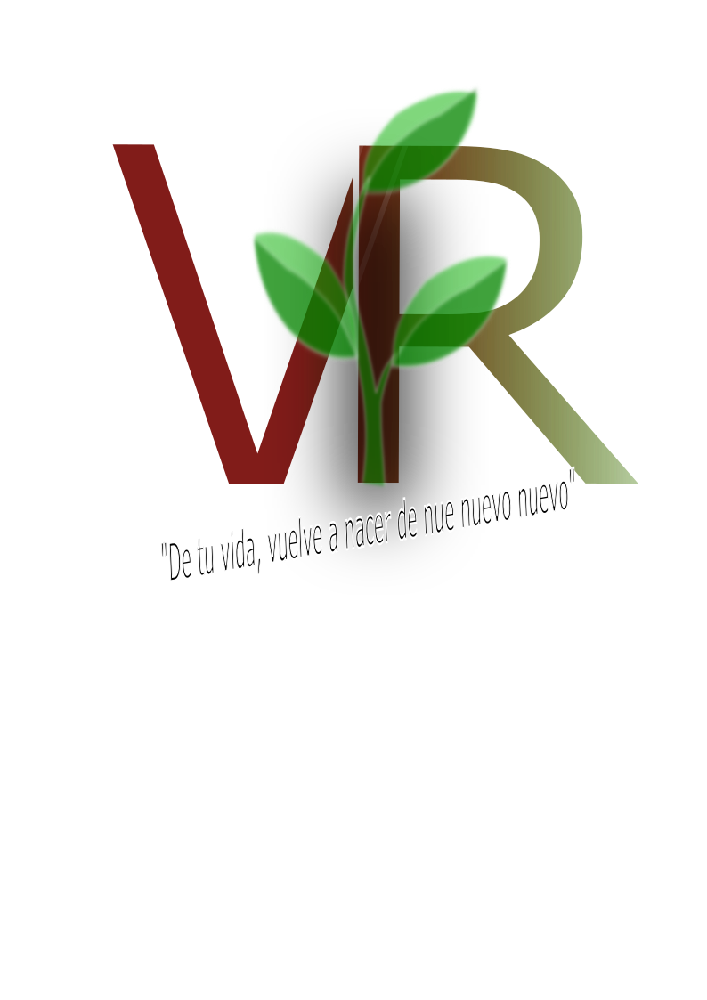

La reforestación contribuye a embellecer el entorno escolar, creando espacios verdes que no solo mejoran la estética del campus, sino que también proporcionan sombra y áreas para el aprendizaje al aire libre, lo que puede mejorar el bienestar general de los estudiantes.

 
pagina de reforestacion

pagina de reforestacion